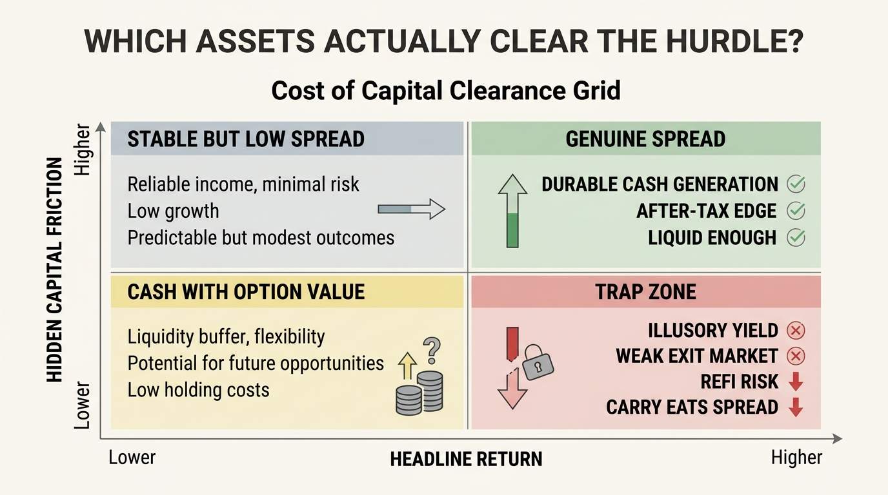

The Cost-of-Capital Trap
Bad wealth decisions often survive because people compare upside to sticker price, not to the real hurdle their capital has to clear. Cheap money, weak reserve discipline, and lazy refinancing assumptions can make mediocre assets look intelligent. The trap becomes visible when financing tightens and the asset never actually earned enough spread to justify the capital committed.
The idea sounds corporate, but it is not limited to finance departments. Households face cost-of-capital questions whenever they lever housing, commit to illiquid funds, carry a business with thin margins, or keep cash reserves so small that every setback forces expensive action. The same discipline applies across contexts: what return must this capital earn to justify its rate, risk, tax treatment, liquidity lock-up, and forgone alternatives? When that question is skipped, wealth allocation drifts into a trap.
Core thesis: the cost-of-capital trap is not merely paying a high rate. It is allocating capital as if the hurdle rate were lower than it really is. That mistake distorts business investment, real-estate ownership, private-market enthusiasm, and even ordinary cash decisions because capital that does not clear its true hurdle quietly destroys optionality and future returns.

What Cost Of Capital Actually Means
Cost of capital is the return threshold required to justify deploying funds into an asset or project rather than keeping those funds available for another use. In corporate finance that threshold is usually discussed through weighted average cost of capital, debt cost, or required return on equity. For households the language is less formal, but the economics are the same. A financed house, a concentrated portfolio, a private fund commitment, and a cash-heavy balance sheet all carry hurdle rates whether the owner calculates them or not.
The trap begins because the visible rate is only one part of that hurdle. Debt has interest cost, but also refinancing risk, covenant pressure, amortization requirements, and sensitivity to falling cash flow. Equity has no coupon, but it still has a required return, dilution risk, and the opportunity cost of capital that could sit elsewhere. Housing has mortgage cost, but also taxes, maintenance, insurance, transaction drag, and mobility loss. A decision that clears the sticker rate can still fail the full hurdle.
This is why higher-rate environments expose mistakes that lower-rate environments can hide. When capital was cheap, mediocre assets could often be carried, refinanced, or sold into favorable multiples. Once the hurdle rises, those same assets reveal that they never had much spread over financing cost. The change feels sudden, but the weakness was already there. Cheap money obscured it.
One detail deserves more emphasis than it usually gets: hurdle rates are balance-sheet specific. A public-equity investor with large liquid reserves can accept a very different risk profile from an operator whose labor income, housing exposure, and private-business stake all depend on the same cycle. The asset may be identical. The cost of capital is not.
Why The Trap Persists Even When Rates Are Obvious
One answer is psychological. People anchor on explicit prices more than on implicit thresholds. A borrower sees a 6.8 percent mortgage. An investor sees a private fund target return. A founder sees available venture money. Far fewer people ask what after-tax, after-friction, after-illiquidity return is actually needed to make the commitment rational. The gap between the quoted price of capital and the full hurdle is where the trap lives.
Another answer is organizational. Gormsen and Huber's work on firms' perceived cost of capital shows that decision makers often use hurdle rates that reflect market conditions and financing perceptions in ways that materially affect investment. That matters because investment decisions are not driven only by textbook discount rates. They are driven by what managers and owners believe capital costs them. If those beliefs stay too low relative to current conditions, projects keep getting approved that should not clear.
The household version is similar. A homebuyer can correctly observe a mortgage rate and still underprice ownership because taxes, repairs, reserves, and transaction costs are not being capitalized honestly. A private-markets investor can understand that capital is locked for years and still underprice the opportunity cost of not having liquid reserves when better assets or personal shocks appear. The failure is not ignorance of rates. It is incomplete pricing of capital itself.
Housing Is One Of The Clearest Examples
Housing debates often get trapped in price language. The common questions are whether the house looks expensive and whether the rent looks too high. That framing is weaker than the underlying economics. User-cost research in housing has long argued that the relevant question is not only price, but the full annualized cost of owning the housing service stream, including financing, taxes, depreciation, maintenance, and expected price dynamics. Poterba's owner-occupied housing framework made this point decades ago, and later work continued to show that tenure choice becomes clearer when uncertainty and user cost are modeled directly.
That is why a household can be correct that mortgage rates matter and still make a bad ownership decision. The cost-of-capital trap in housing appears when buyers treat the mortgage rate as the whole hurdle and neglect the capital tied up in down payment, maintenance reserves, property-tax exposure, mobility loss, and the return that same capital could have earned elsewhere. WealthMeter readers already see parts of this in the rent-versus-buy reversal and mortgage lock-in problems. The missing layer is that both are expressions of the same capital-pricing mistake.
Low-rate periods made this mistake look benign because asset appreciation could swamp carry cost. Once appreciation slows or financing resets higher, the full hurdle reappears. What felt like a wealth engine turns out to have been a leveraged duration bet with expensive upkeep.

Private Markets And Growth Stories Are Another Version
When capital is abundant, investors often confuse access with value. Venture rounds close, private credit funds proliferate, and long-duration narratives attract money because required returns are being discounted at a low hurdle. As that hurdle rises, the same assets need stronger cash generation, faster path to liquidity, or steeper markdowns to remain rational. The trap is paying growth multiples or illiquidity premiums that only make sense under yesterday's capital regime.
Auerbach's older work on taxes and cost of capital remains relevant here because it shows that financing structure changes required returns. The market does not price all dollars equally. Retained earnings, new equity, debt, and tax treatment all change the hurdle. Modern investors often talk as if capital is fungible in a simple sense, but once tax drag, dilution, spread, and duration risk are recognized, the hurdle becomes highly context dependent.
For households this matters in a simpler way. A private asset offering 11 percent gross may look superior to cash yielding 5 percent. But if the private asset is locked, marked infrequently, correlated with labor income, and exposed to refinancing or exit-market risk, the true spread may be much smaller than advertised. In some cases it may be negative once liquidity value is included. The trap is not refusing risk. It is mispricing the risk-adjusted cost of the capital being committed.
Cash Also Has A Cost, But It Is Usually Misunderstood
Some readers hear cost of capital and assume the lesson is to avoid cash because idle money has opportunity cost. That is only partly true. Cash does have a hurdle problem if it sits below inflation or below available risk-adjusted short-term yields. But cash also lowers the hurdle on every future decision because it preserves flexibility. In a world of financing stress and repriced assets, liquidity itself becomes an asset with return-like value.
This is why the cost-of-capital trap often pairs with the liquidity illusion. Investors focus on the cost of holding cash and ignore the cost of not having it. The latter includes forced selling, inability to refinance, missed dislocations, and weaker bargaining power during personal or market stress. Capital that is liquid can be redeployed into high-spread opportunities precisely when trapped capital cannot move.
The relevant question is therefore comparative. Is cash under-earning relative to low-risk alternatives, or is it appropriately earning an option value that supports the rest of the balance sheet? A spreadsheet that only compares nominal yields will often answer that question incorrectly.
Where Households Misprice The Hurdle Most Often
- Housing equity: owners price the mortgage but not the trapped down payment, reserve needs, property-tax drift, and mobility loss.
- Private markets: allocators price target return but not vintage risk, fee layering, delayed marks, and dependence on a healthy exit market.
- Operating businesses: founders price growth capital too cheaply when labor risk, customer concentration, and refinancing dependence sit on the same balance sheet.
- Cash buffers: households underestimate how much optionality disappears when every shock must be financed at the worst possible moment.
How To Avoid The Trap
- Write the full hurdle explicitly. Include financing cost, taxes, maintenance or operating drag, liquidity lock-up, and execution risk.
- Stress the exit path. Many assets fail not on entry price but on refinancing, resale, or forced-hold dynamics.
- Price liquidity as a real asset. Cash and near-cash reduce the hurdle on future opportunities and shocks.
- Use alternative-use discipline. Ask what the same capital could earn elsewhere with lower fragility.
- Separate gross return stories from net return reality. A high nominal yield does not help if the capital structure absorbs the spread.
The point is not to become incapable of committing capital. It is to demand that capital earn its keep. Assets should not survive in a portfolio merely because financing was once cheap or because the owner is anchored to acquisition logic from a lower-rate regime. Wealth grows when capital is matched to projects and assets that clear a real hurdle, not a nostalgic one.
Known, Inferred, And Unknown
| Category | Assessment |
|---|---|
| Known | Investment and ownership decisions depend on a hurdle rate that extends beyond the visible interest rate to taxes, risk, liquidity, and financing structure. |
| Known | Housing research has long shown that user cost, not sticker price alone, is the correct economic lens for ownership decisions. |
| Known | Higher perceived or actual costs of capital reduce the set of projects and assets that rationally clear required-return thresholds. |
| Inferred | Many apparent wealth opportunities in low-rate periods were viable only because hurdle rates were temporarily suppressed, not because the underlying assets were intrinsically strong. |
| Unknown | How quickly households and private-market allocators will fully reprice their hurdle assumptions when financing conditions shift again. |
The Practical Correction
Wealth discipline improves once every major allocation is treated as a hurdle-rate problem. A financed house must beat renting plus alternative deployment of equity. A private fund must beat liquid alternatives plus an illiquidity premium. A concentrated stock must beat the required return implied by concentration risk and balance-sheet dependence. Cash must justify itself through resilience and option value. Nothing gets a free pass merely because it has a familiar label.
That is why the cost-of-capital trap belongs near the front of WealthMeter's structural map. It explains why expensive houses, mediocre private deals, low-spread businesses, and cash-starved households all fail in related ways. They are not simply overpaying. They are using the wrong hurdle.
Further Reading Inside The Site
This article connects directly to The Liquidity Illusion, The Rent vs Buy Reversal, and The Asset-Rich, Cash-Poor Paradox. Together they show how capital cost, liquidity value, and ownership frictions compound into the same wealth error.
Source List
Gormsen NJ, Huber K. Firms' Perceived Cost of Capital. NBER Working Paper 32611. 2024.
Poterba JM. Taxes and the User Cost of Capital for Owner-Occupied Housing. NBER Working Paper 929. 1982.
Rosen HS, Rosen KT, Holtz-Eakin D. Housing Tenure, Uncertainty, and Taxation. NBER Working Paper 1168. 1983.
Auerbach AJ. Taxes, Firm Financial Policy and the Cost of Capital: An Empirical Analysis. NBER Working Paper 955. 1982.
Svensson LEO. Are Swedish House Prices Too High? Why the Price-to-Income Ratio Is a Misleading Indicator. NBER Working Paper 31862. 2023.